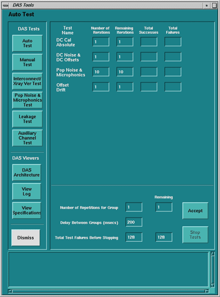

Operating Documentation
Direction 5181166-800, Rev# 7
BrightSpeed Select Service Methods Adv
Operating Documentation |
The difference between auto test and manual test is that the auto test feature runs a default number of iterations of each of the sub-tests, while the manual mode allows the user to specifically select a sub-test(s) and the number of iterations for that selection of test(s).
The following tests are executed during auto test (GUI shown in Illustration 1):
DC Cal (see Section 1)
Offset Drift (see Section 2)
Pop/Noise & Microphonics (see Section 3)
Offset & Noise (see Section 4)
Illustration 1: Auto Test / Manual Test

This test is performed to check the absolute linearity and absolute counts of the DAS using DC CAL modes using various levels, Pre-Amp gains, and FPA gains. There are 15 stationary DAS scans taken, without x-ray. Each scan is analyzed for its absolute means count. This count range is different for each scan dependent on the injected dc signal. Then the ratio of the highest count scan to each of the other scans are performed and are analyzed to a specific count range to determine the linearity of the FP amplifier.
If DC Cal fails and the failing channels are all on one board, then most likely that particular board is suspected bad. The suggestion is to swap the board with a known good board and repeat the test.
If the failing channels are random and occur across many boards, then the problem may be a DAS Control Board (DCB) fault, or more likely, noise getting into the DAS. To correct for noise, be sure that the DAS air plenum is securely in place and the fans are correctly mounted and orientated on the plenum. Also, check board seating, power supply noise, and cable seating on all DAS chassis.
It is also possible that the diagnostic feature of this test may be bad on the board. The charging capacitors on the converter board used to input the correct diagnostic signal into the front-end of the converter board may go bad. In this case, even if the diagnostic fails, there would be no adverse effect during patient or DDC scanning.
Table 1: DC Cal Test
| SCAN # | DAS GAIN | PROTOCOL | DESCRIPTION |
|---|---|---|---|
| 1 | 31 | DCCAL 0 | Used for Offset correction on all Gain 31 scans |
| 2 | 31 | DCCAL 8 | Tests FPA = 1 |
| 3 | 31 | DCCAL 1 | Tests FPA = 1 |
| 4 | 31 | DCCAL 2 | Tests FPA =8 |
| 5 | 31 | DCCAL 3 | Tests FPA =8 |
| 6 | 31 | DCCAL 4 | Tests FPA =32 |
| 7 | 31 | DCCAL 5 | Tests FPA =32 |
| 8 | 31 | DCCAL 6 | Tests FPA =128 |
| 9 | 31 | DCCAL 7 | Tests FPA =128 |
| 10 | 16 | DCCAL 0 | Used for Offset correction on Gain 16 Scan |
| 11 | 16 | DCCAL 1 | Tests Pre-amp Gain capacitor |
| 12 | 15 | DCCAL 0 | Used for Offset correction on Gain 15 Scan |
| 13 | 15 | DCCAL 1 | Tests Pre-amp Gain capacitor |
| 14 | 3 | DCCAL 0 | Used for Offset correction on Gain 3 Scan |
| 15 | 3 | DCCAL 1 | Tests Pre-amp Gain capacitor |
There should be very little or no drift between the first scan of each scan mode and the scan taken 120 seconds later. The spec is ±3 counts for each channel across a 120 seconds time.
A series of predefined rotating scans, w/o x-ray, and the scan data saved on disk for analysis. The scan data is then view averaged and the standard deviations are measured against a spec limit.
This test takes a series of three scans. In the auto-mode, it takes ten iterations of the series. Failure analysis of this test is dependent on test results. Pop/Noise and microphonics issues can be caused by many system related conditions. Some of the most common could be the DAS/Detector interface (such as elastomer connection caused by dirt, oil, debris), flex top cover clamp torque incorrect, air plenum not installed, fan orientation not correct, power supply noise, electrical connections, gantry rotation/mechanical issues, and external influences.
It is very important to look at patterns relative to DAS/Detector architecture, gantry rotation (azimuth position as well as velocity), and high voltage (with or without x-ray, rotor on/off).
Failure analysis is similar to that of DC Cal, with the exception that there is no input test voltage applied. Depending on failed pattern, based on DAS/Detector architecture, the fault may be a converter board, DAS/Detector interface, or power supply.
Table 2: Offset and Noise Scans
| Scan # | Gantry Rotation | X-Ray | Rotor | Acquisition Mode | DAS Gain | Scan Time/VPS | Scan Data Saved |
|---|---|---|---|---|---|---|---|
| 1 | Stationary 0° Deg. | No X-Ray | Off | 4 X 5.00 | 31 | 1 / 984 | Raw |
| 2 | Stationary 0° Deg. | No X-Ray | Off | 8 X 1.25 | 5 | 1 / 984 | Raw |
Table 3: Offset value - Analyze “Means - Raw”
| Channel Zones / Maximum DAS Counts Spec Limits | ||||||
|---|---|---|---|---|---|---|
| Scan # | Acquisition Mode | DAS Gain | 1 - 64 705 - 750 | 65 - 704 | 751 - 762 | 763 - 768 |
| 1 | 4 X 5.00 | 31 | 2280 ±500 | 2280 ±500 | 2280 ±500 | 2280 ±500 |
| 2 | 8 X 1.25 | 5 | 2280 ±500 | 2280 ±500 | 2280 ±500 | 2280 ±500 |
Table 4: Noise value - Analyze “Standard Deviations - Raw”
| Channel Zones / Maximum DAS Counts Spec Limits | ||||||
|---|---|---|---|---|---|---|
| Scan # | Acquisition Mode | DAS Gain | 1 - 100 705 - 750 | 101 - 704 | 751 - 762 | 763 - 768 |
| 1 | 4 X 5.00 | 31 | 9.5 | 8.5 | 12.0 | 8.5 |
| 2 | 4 X 1.25 | 5 | 28.0 | 23.0 | 32.0 | 28.0 |